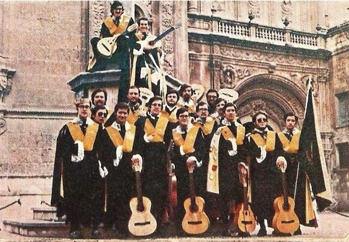

JOTA DE LA VIRGEN DE LOS PELIGROS (EP) (1975) 1. Jota de la Virgen de los Peligros 2. Bolero a Murcia 3. Mujer 4. Corococó
HERMANDAD DE TUNOS DE LA FACULTAD DE MEDICINA DE LA UNIVERSIDAD DE MURCIA (1973)  1. Carrascosa 2. Clavelitos 3. La Sirena 4. Las Cintas de mi Capa 5. Sebastopol 6. Maribel 7. Horas De Ronda 8. Amelia 9. En Esta Noche Clara 10. Ronda De España 11. Mamen 12. Noche Perfumada 13. Al Clarear 14. El Rondador 15. La Morena de mi Copla 16. La Feria 17. El Paso 18. Ojos De España 19. Mujer 20. Mar Menor
, portada (3).jpg)